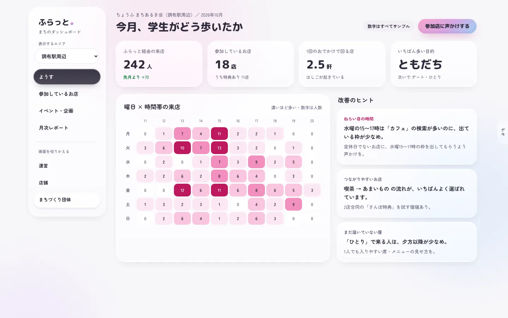
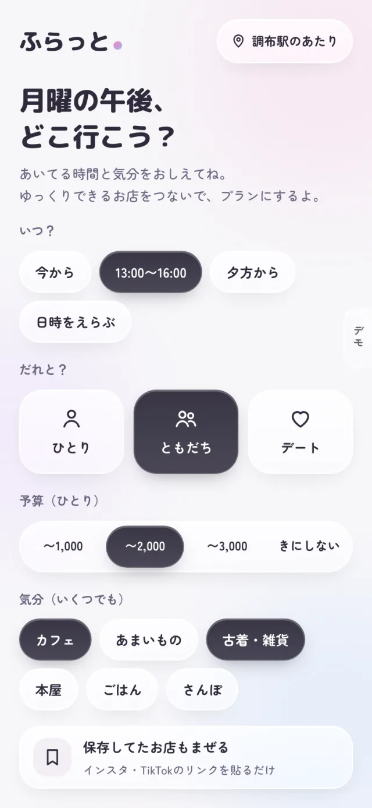
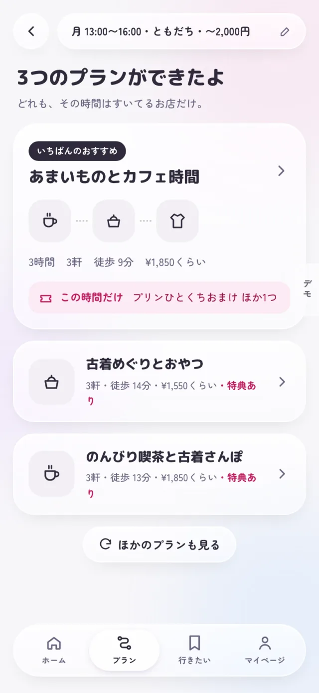

プロダクト/02
ふらっと仮称
空いた時間の行き先が、1分で決まる。
「今日・この時間・ここから」を入れると、その時間すいているお店をつないだお出かけプランができるアプリです。


課題
時間はあるのに、行き先が決まらない。
授業の合間や休日の午後、時間はあるのに、結局どこにも行かないことがあります。検索すればお店は見つかりますが、どこを組み合わせてどう回るかは、自分で決めなければならないからです。
上京したばかりの学生は、そもそも街を知りません。一方でお店には、席が空いていて、もっと来てほしい時間帯があります。
行ける時間と来てほしい時間が、うまく出会えていません。
解決案
探すのではなく、決めてくれる。
ふらっとは、お店を検索するアプリではなく、予定を決めるアプリです。選択肢が多いほど人は動けなくなるので、最初から3つのプランに絞って出します。
いつ、だれと、予算、気分を選ぶと、その時間にすいているお店をつないだプランができます。気に入ったら、そのままLINEで友だちを誘えます。
お店がすることは、「来てほしい時間」を出すことだけです。

仕組み
学生、お店、まち。立場ごとに画面がある。
ふらっとは、使う立場ごとに別の画面を持っています。同じ一回の来店でも、知りたいことが立場によって違うからです。
学生はプランを選び、お店でチェックインします。その記録が、お店には時間帯ごとの効果として、商店街やまちづくり団体にはエリア全体の人の動きとして届きます。
一つの行動を、三者それぞれの役に立つ形で返す。これがふらっとの仕組みです。なお、デモではAIを使わず、決まったルールでプランを組んでいます。
-
学生
空き時間の行き先を決めて、友だちを誘う。
-
お店
来てほしい時間と特典を出し、効果を振り返る。
-
商店街・団体
エリアに若い人が来ているかを確かめる。
-
運営
全体の状況を見て、お店や団体に提案する。
これからの展望
一つの街で、実際に試す。
次の一歩は、実在のお店と学生に使ってもらうことです。いまは架空の店舗データで動くデモで、本当に役に立つかは、現場で試さないと分からないからです。
まず一つのエリアで、協力してくれるお店を探します。集まった利用の記録は、プランの精度を上げることと、お店や団体への改善の提案に生かします。
小さく始めて、うまくいった形をほかの街へ広げていきます。
「ふらっと」は仮称です。公開中のデモに登場する店名・団体名・数字は、すべて架空のサンプルです。
ほかのプロダクト